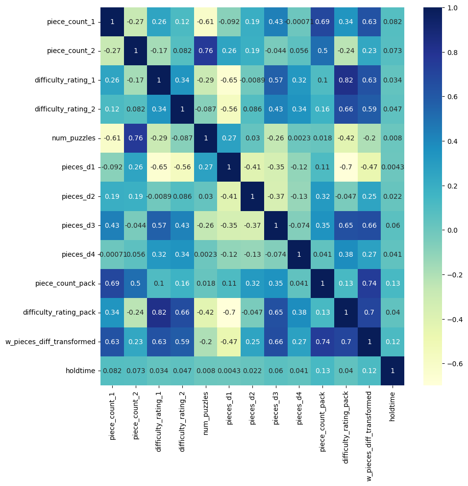

4. Feature Importances
Contents
4. Feature Importances#
# Loading libraries
from sklearn.model_selection import train_test_split
from sklearn.linear_model import LinearRegression
from sklearn.tree import DecisionTreeRegressor
from sklearn.ensemble import RandomForestRegressor
from sklearn.metrics import mean_squared_error, mean_absolute_error
from sklearn.model_selection import GridSearchCV
from sklearn import tree
# Loading cleaned data
df_features_combined = pd.read_csv('data/df_features_combined.csv')
df_features_combined.shape
(19387, 16)
# plotting correlation heatmap
plt.figure(figsize=(10,10))
dataplot = sns.heatmap(df_features_combined.corr(), cmap="YlGnBu", annot=True)
# displaying heatmap
plt.show()

# random split into train and validation
train, test = train_test_split(df_features_combined, test_size = 0.25, random_state=1)
x_train = train.drop(['holdtime', 'pack_name'], axis=1)
y_train = train['holdtime']
x_test = test.drop(['holdtime', 'pack_name'], axis = 1)
y_test = test['holdtime']
4.1 Benchmark Model#
# First just try average hold time by member
train_holdtime_mean = y_train.mean()
pred1 = np.empty(len(y_test))
pred1.fill(train_holdtime_mean)
mean_absolute_error(y_test, pred1)
12.62234436965736
4.2 Linear Regression#
# dummy variable - hopefully x_test doesnt bring any surprises
x_train = pd.get_dummies(x_train)
x_test = pd.get_dummies(x_test)
x_train.shape, x_test.shape
((14540, 32), (4847, 32))
# simple linear regression
model_lr = LinearRegression(normalize=True)
model_lr.fit(x_train, y_train) #fit the model
pred2 = model_lr.predict(x_test) #make prediction on test set
mean_absolute_error(y_test, pred2) #calculate mae
12.422053647064944
coefficients = pd.concat([pd.DataFrame(x_train.columns,columns=['columns']),
pd.DataFrame(np.transpose(model_lr.coef_),columns=['coefficients'])], axis = 1)
coefficients.sort_values(by = 'coefficients').head(15)
| columns | coefficients | |
|---|---|---|
| 0 | piece_count_1 | -5.427657e+11 |
| 1 | piece_count_2 | -5.427657e+11 |
| 29 | brand_2_Stave | -4.353840e+00 |
| 16 | brand_1_Nautilus | -2.782904e+00 |
| 18 | brand_1_Other-Laser-cut | -2.748214e+00 |
| 27 | brand_2_Other-Hand-cut | -1.944098e+00 |
| 13 | brand_1_DaVici | -1.835529e+00 |
| 4 | num_puzzles | -1.622190e+00 |
| 15 | brand_1_Liberty | -1.421600e+00 |
| 20 | brand_1_Wentworth | -1.149477e+00 |
| 22 | brand_2_Artifact | -1.019384e+00 |
| 21 | brand_1_unknown | -9.244420e-01 |
| 2 | difficulty_rating_1 | -2.347115e-01 |
| 3 | difficulty_rating_2 | -1.867834e-01 |
| 17 | brand_1_Other-Hand-cut | 4.988677e-02 |
Cannot say anything about the coefficients right now. Need p-values. Building OLS model to get that.
4.3 OLS model#
from sklearn import datasets, linear_model
import statsmodels.api as sma
X = x_train
y = y_train
X2 = sma.add_constant(X)
est = sma.OLS(y, X2.astype(float))
est2 = est.fit()
print(est2.summary())
OLS Regression Results
==============================================================================
Dep. Variable: holdtime R-squared: 0.025
Model: OLS Adj. R-squared: 0.023
Method: Least Squares F-statistic: 13.29
Date: Wed, 15 Mar 2023 Prob (F-statistic): 6.21e-61
Time: 00:14:09 Log-Likelihood: -63076.
No. Observations: 14540 AIC: 1.262e+05
Df Residuals: 14511 BIC: 1.264e+05
Df Model: 28
Covariance Type: nonrobust
=============================================================================================
coef std err t P>|t| [0.025 0.975]
---------------------------------------------------------------------------------------------
const 10.5168 2.925 3.596 0.000 4.784 16.250
piece_count_1 0.0016 0.001 1.216 0.224 -0.001 0.004
piece_count_2 0.0034 0.002 2.226 0.026 0.000 0.006
difficulty_rating_1 -0.2139 0.532 -0.402 0.688 -1.257 0.829
difficulty_rating_2 -0.2403 0.454 -0.529 0.597 -1.130 0.650
num_puzzles -1.5342 0.847 -1.811 0.070 -3.195 0.126
pieces_d1 0.0014 0.001 1.044 0.297 -0.001 0.004
pieces_d2 -0.0005 0.001 -0.756 0.449 -0.002 0.001
pieces_d3 -0.0011 0.001 -1.180 0.238 -0.003 0.001
pieces_d4 0.0052 0.002 2.568 0.010 0.001 0.009
piece_count_pack 0.0050 0.002 2.839 0.005 0.002 0.008
difficulty_rating_pack 0.3769 0.646 0.583 0.560 -0.890 1.644
w_pieces_diff_transformed 1.3435 0.974 1.379 0.168 -0.566 3.252
brand_1_Artifact 4.5053 0.958 4.705 0.000 2.628 6.382
brand_1_DaVici -0.0230 2.007 -0.011 0.991 -3.957 3.911
brand_1_Ecru 2.3095 0.986 2.342 0.019 0.377 4.242
brand_1_Liberty 0.3715 1.121 0.331 0.740 -1.826 2.570
brand_1_Nautilus -0.9866 1.546 -0.638 0.523 -4.017 2.044
brand_1_Other-Hand-cut 1.8460 1.233 1.497 0.134 -0.571 4.263
brand_1_Other-Laser-cut -0.8987 1.351 -0.665 0.506 -3.548 1.750
brand_1_Stave 1.8465 1.407 1.312 0.189 -0.912 4.605
brand_1_Wentworth 0.6735 1.239 0.543 0.587 -1.756 3.103
brand_1_unknown 0.8729 1.526 0.572 0.567 -2.118 3.864
brand_2_Artifact 0.2771 0.901 0.308 0.758 -1.488 2.042
brand_2_DaVici 1.8875 1.955 0.965 0.334 -1.945 5.720
brand_2_Ecru 1.9655 0.914 2.151 0.032 0.174 3.757
brand_2_Liberty 1.8286 1.128 1.620 0.105 -0.383 4.041
brand_2_Nautilus 3.6361 1.610 2.258 0.024 0.480 6.792
brand_2_Other-Hand-cut -0.6691 1.178 -0.568 0.570 -2.979 1.641
brand_2_Other-Laser-cut 1.4615 1.260 1.160 0.246 -1.009 3.932
brand_2_Stave -3.2194 2.467 -1.305 0.192 -8.056 1.617
brand_2_Wentworth 1.5982 1.318 1.213 0.225 -0.985 4.181
brand_2_unknown 1.7507 1.341 1.306 0.192 -0.878 4.379
==============================================================================
Omnibus: 9068.435 Durbin-Watson: 1.999
Prob(Omnibus): 0.000 Jarque-Bera (JB): 97048.061
Skew: 2.910 Prob(JB): 0.00
Kurtosis: 14.239 Cond. No. 1.14e+16
==============================================================================
Notes:
[1] Standard Errors assume that the covariance matrix of the errors is correctly specified.
[2] The smallest eigenvalue is 9.68e-23. This might indicate that there are
strong multicollinearity problems or that the design matrix is singular.

4.4 Decision Tree#
def dtree_grid_search(X,y,nfolds):
#create a dictionary of all values we want to test
param_grid = {'max_depth': [3, 5, 7, 9, 11, 15, 17]}
# decision tree model
dtree_model = DecisionTreeRegressor()
#use gridsearch to test all values
dtree_gscv = GridSearchCV(dtree_model, param_grid, cv=nfolds)
#fit model to data
dtree_gscv.fit(X, y)
return dtree_gscv.best_params_
dtree_grid_search(X = x_train, y = y_train, nfolds = 5)
{'max_depth': 3}
model_dt = DecisionTreeRegressor(max_depth = 3,random_state=0)
model_dt.fit(x_train, y_train) #fit the model
pred3 = model_dt.predict(x_test) #make prediction on test set
mean_absolute_error(y_test, pred3) #calculate mae
12.447865314968272
feats = {} # a dict to hold feature_name: feature_importance
for feature, importance in zip(x_train.columns, model_dt.feature_importances_):
feats[feature] = importance #add the name/value pair
importances = pd.DataFrame.from_dict(feats, orient='index').rename(columns={0: 'Gini-importance'})
# importances.sort_values(by='Gini-importance').plot(kind='bar', rot=45)
importances.sort_values(by = 'Gini-importance', ascending=False).head(15)
| Gini-importance | |
|---|---|
| piece_count_pack | 0.607699 |
| w_pieces_diff_transformed | 0.258662 |
| brand_1_Artifact | 0.088650 |
| pieces_d3 | 0.044989 |
| brand_2_Ecru | 0.000000 |
| brand_1_Wentworth | 0.000000 |
| brand_1_unknown | 0.000000 |
| brand_2_Artifact | 0.000000 |
| brand_2_DaVici | 0.000000 |
| piece_count_1 | 0.000000 |
| brand_1_Other-Laser-cut | 0.000000 |
| brand_2_Liberty | 0.000000 |
| brand_2_Nautilus | 0.000000 |
| brand_2_Other-Hand-cut | 0.000000 |
| brand_2_Other-Laser-cut | 0.000000 |
4.4 Random Forest#
def rf_grid_search(X,y,nfolds):
param_grid = {'max_depth': [3, 5, 7, 9], 'n_estimators': [50, 70, 100, 150, 200]}
rf_model = RandomForestRegressor()
rf_gscv = GridSearchCV(rf_model, param_grid, cv=nfolds)
rf_gscv.fit(X, y)
return rf_gscv.best_params_
rf_grid_search(X = x_train, y = y_train, nfolds = 5)
{'max_depth': 3, 'n_estimators': 100}
model_rf = RandomForestRegressor(max_depth = 3,n_estimators=200, random_state=0)
model_rf.fit(x_train, y_train) #fit the model
pred4 = model_rf.predict(x_test) #make prediction on test set
mean_absolute_error(y_test, pred4) #calculate mae
12.436204414656602
feats_rf = {} # a dict to hold feature_name: feature_importance
for feature, importance in zip(x_train.columns, model_rf.feature_importances_):
feats_rf[feature] = importance #add the name/value pair
importances_rf = pd.DataFrame.from_dict(feats_rf, orient='index').rename(columns={0: 'feature_importance'})
# importances.sort_values(by='Gini-importance').plot(kind='bar', rot=45)
importances_rf.sort_values(by='feature_importance', ascending=False).head(15)
| feature_importance | |
|---|---|
| piece_count_pack | 0.575958 |
| w_pieces_diff_transformed | 0.213131 |
| brand_1_Artifact | 0.046877 |
| piece_count_1 | 0.043080 |
| pieces_d4 | 0.033324 |
| piece_count_2 | 0.016813 |
| pieces_d3 | 0.015915 |
| pieces_d1 | 0.015663 |
| pieces_d2 | 0.011825 |
| difficulty_rating_1 | 0.007307 |
| brand_2_Ecru | 0.004491 |
| difficulty_rating_pack | 0.003580 |
| brand_2_Artifact | 0.002352 |
| brand_1_Stave | 0.001416 |
| brand_2_Other-Laser-cut | 0.001191 |